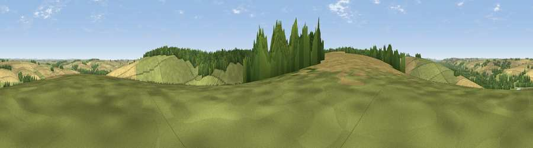

Viewpoint near Steeple Langford
#20295 in England · top 31% of its area beats it · near Steeple LangfordWhere it is
The exact computed spot (SU 04745 35727). Click the marker for map links.
The view, rendered

A 360° render of this exact spot computed from the terrain model, tree cover and land cover — summer colours, afternoon light, calibrated against photographs of famous viewpoints. Real trees, hedges and buildings will differ in detail.
The panorama
Grey silhouette: terrain skyline in each direction (720 bearings, Earth curvature and refraction included). Dashed green: skyline with trees (+15 m) and buildings (+8 m) as obstacles. Blue strip: how far the ground is visible on each bearing.
Where the view opens
Wedge length = distance to the farthest visible ground on that bearing (vegetation-aware). Rings at 10, 25 and 50 km.
What fills the view
39% cropland · 37% grassland · 23% woodland ·
Angular shares of the visible panorama (visual magnitude), not map area. Landscape diversity 0.49 (0–1 Shannon).
Key numbers
More beautiful places nearby
The staircase of upgrades: each row has a higher view potential than everything closer. Driving times are estimates from straight-line distance, calibrated against real road routing — check an actual route before setting out.
| Place | Direction | Drive | Score |
|---|---|---|---|
| Viewpoint near Hanging Langford | W · 3 km | ~8 min | 58.4 |
| West Hill | W · 4 km | ~9 min | 59.0 |
| Hydon Hill | S · 7 km | ~14 min | 61.2 |
| Marleycombe Hill | S · 14 km | ~25 min | 63.3 |
| Viewpoint near Fonthill Gifford | WSW · 15 km | ~26 min | 64.2 |
| Trow Down | SSW · 16 km | ~28 min | 67.5 |
| Viewpoint near Bulford | ENE · 16 km | ~29 min | 70.3 |
| Monk's Down | SW · 19 km | ~32 min | 74.4 |
51.12081, -1.93358 · source: osm peak · position refined by local search. Computed location — check access rights before visiting.